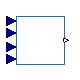
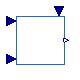

Basic components for WEHGOV turbine governor model
| Name | Description |
|---|---|
| Governor | WEHGOV governor and hydraulic actuators |
| Turbine | WEHGOV turbine dynamics |

OpenIPSL.Electrical.Controls.PSSE.TG.BaseClasses.WEHGOV.GovernorWEHGOV governor and hydraulic actuators
| Name | Description |
|---|---|
| S_b | System base [V.A] |
| M_b | System base [V.A] |
| R_PERM_PE | Pelec gain [1] |
| R_PERM_GATE | Feedback Gate gain [1] |
| T_PE | Electrical power transducer time constant [s] |
| M | Feedback control switch |
| SP_Band | Speed deadband [1] |
| KP | Governor proportional gain [1] |
| KI | Governor integral gain [1/s] |
| KD | Governor derivative gain [s] |
| TD | Governor derivative controller time constant [s] |
| TP | Pilot valve time constant [s] |
| GMAX | Maximum limit for the gate position [1] |
| GMIN | Minimum limit for the gate position [1] |
| DICN | PID integral controller limit from field tuning [1] |
| DPV | Change in valve output [1] |
| TDV | Distribution valve time constant [s] |
| GTMXOP | Maximum gate opening rate [p.u./s] [1] |
| GTMXCL | Maximum gate closing rate [p.u./s] [1] |
| Tg | Distribution valve limit [1] |
| G1 | Gate position 1 [1] |
| G2 | Gate position 2 [1] |
| G3 | Gate position 3 [1] |
| G4 | Gate position 4 [1] |
| G5 | Gate position 5 [1] |
| FLWG1 | Water flow rate 1 [1] |
| FLWG2 | Water flow rate 2 [1] |
| FLWG3 | Water flow rate 3 [1] |
| FLWG4 | Water flow rate 4 [1] |
| FLWG5 | Water flow rate 5 [1] |
| FLWP1 | Water flow rate 1 [1] |
| FLWP2 | Water flow rate 2 [1] |
| FLWP3 | Water flow rate 3 [1] |
| FLWP4 | Water flow rate 4 [1] |
| FLWP5 | Water flow rate 5 [1] |
| FLWP6 | Water flow rate 6 [1] |
| FLWP7 | Water flow rate 7 [1] |
| FLWP8 | Water flow rate 8 [1] |
| FLWP9 | Water flow rate 9 [1] |
| FLWP10 | Water flow rate 10 [1] |
| Pmech1 | Mechanical power 1 [1] |
| Pmech2 | Water flow rate 2 [1] |
| Pmech3 | Water flow rate 3 [1] |
| Pmech4 | Water flow rate 4 [1] |
| Pmech5 | Water flow rate 5 [1] |
| Pmech6 | Water flow rate 6 [1] |
| Pmech7 | Water flow rate 7 [1] |
| Pmech8 | Water flow rate 8 [1] |
| Pmech9 | Water flow rate 9 [1] |
| Pmech10 | Water flow rate 10 [1] |
| Name | Description |
|---|---|
| SPEED | |
| PELEC | |
| PREF | |
| Gate_Position | |
| PMECH0 |

OpenIPSL.Electrical.Controls.PSSE.TG.BaseClasses.WEHGOV.TurbineWEHGOV turbine dynamics
| Name | Description |
|---|---|
| S_b | System base [V.A] |
| M_b | System base [V.A] |
| G1 | Gate position 1 [1] |
| G2 | Gate position 2 [1] |
| FLWG1 | Water flow rate 1 [1] |
| FLWG2 | Water flow rate 2 [1] |
| TW | Water time constant [s] |
| FLWP1 | Water flow rate 1 [1] |
| FLWP2 | Water flow rate 2 [1] |
| FLWP3 | Water flow rate 3 [1] |
| FLWP4 | Water flow rate 4 [1] |
| FLWP5 | Water flow rate 5 [1] |
| FLWP6 | Water flow rate 6 [1] |
| Pmech1 | Mechanical power 1 [1] |
| Pmech2 | Water flow rate 2 [1] |
| Pmech3 | Water flow rate 3 [1] |
| Pmech4 | Water flow rate 4 [1] |
| Pmech5 | Water flow rate 5 [1] |
| Pmech6 | Water flow rate 6 [1] |
| D_TURB | Turbine damping [1] |
| Name | Description |
|---|---|
| Gate_Position | |
| PMECH | |
| SPEED | |
| PMECH0 |